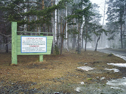
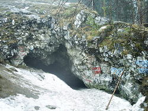

Сугомакская пещера
Sugomak Pestera - Sugomakskaya Cave - Sugomak Cave - Marble Cave
Useful Information
|  |
| Image: sign to the cave and the Mt Sugomak. Picture taken by Anthony Ivanoff and released into public domain. |
| Location: | Near Kyshtym |
| Open: |
No restrictions. [2009] |
| Fee: |
free. [2009] |
| Classification: |
 Karst cave
in marble Karst cave
in marble
|
| Light: | bring torch |
| Dimension: | |
| Guided tours: | |
| Photography: | |
| Accessibility: | |
| Bibliography: | |
| Address: | Sugomak Pestera, Tel: +7-, Fax: +7-, |
| As far as we know this information was accurate when it was published (see years in brackets), but may have changed since then. Please check rates and details directly with the companies in question if you need more recent info. |
|
History
Description
|  |
| Image: entrance of Sugomak Cave. Picture taken by Anthony Ivanoff and released into public domain. |
Sugomak Pestera is named after Mount Sugomak, where it is located on the eastern slope. The mountain overlooks Ozero Sugomak (Sugomak Lake) and the city of Kyshtym behind. The cave is formed in marble which is rather exceptional for the Ural. The cave is the main sight in the area, probably because of its location close to a big city and to a nice outlook. Unfortunately this caused some vandalizm of the cave, like the graffitty at the entrance. The cave is rather small, with three subsequent chamber, the last of which is partly filled with water.
The cave is also popular with all kinds of esoteric weirdos. There are urban legends about scientists which discovered three egg-shaped artefacts from the cave, 8m below sedimentary layers, others tell of a possible ufo land or crash site. And there is the the story of Alyoshenka, the Kyshtym dwarf. A dwarf liek creature appeared in Kyshtym in the late 1990s and lived for some time in the hous of a mad woman. One of the stories tells about dwarfs living in this cave or another cave of the mountain. However, there is another story which is less funny, about the nuclear power plant on the other side of Kyshtym. There are rather serious stories about an nuclear accident which took place some years ago and was withhold.
 Search Google for "Sugomak Pestera"
Search Google for "Sugomak Pestera" Google Earth Placemark
Google Earth Placemark Panoramio - Photo of Mramornaya Cave
Panoramio - Photo of Mramornaya Cave{kind=link}
{kind=link}